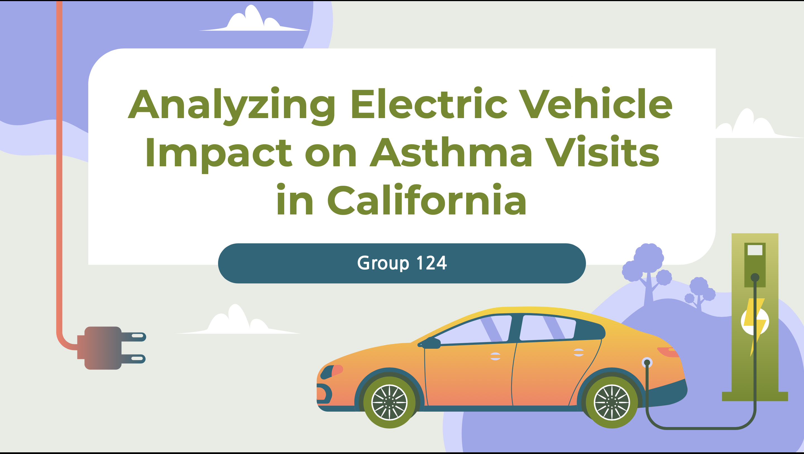
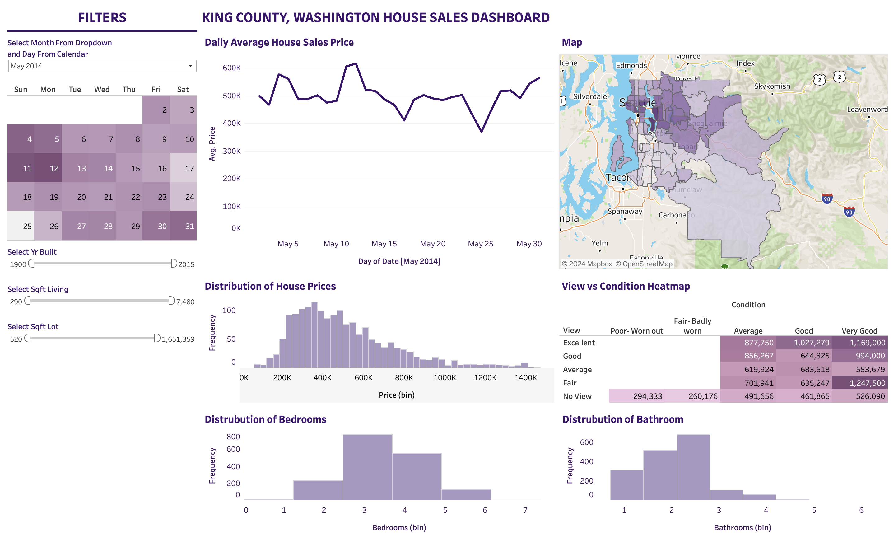

Aspiring Data Analyst practicing Python, SQL, Tableau
About
Hello! My name is Kang Gun Ham. I am currently a third-year pursuing
a bachelors degree in Data Science at UC San Diego.
Working with data sparked my interest for data analytics. Being able to use data to
tell stories has been fun for me. It is almost like data coming to life!
The fact that data can be analyzed and visualized to help people make better
and informed decision makes this not only fun but meaningful as well.
So here I am, out in the real world. I am seeking for opportunity to understand more
complex datasets and enhance my technical skills.
In all honesty, I just simply want to help people use data.
PROJECTS
Electric Vehicle Impact on Asthma Visits in California

Our study aims to explore the correlation between the proportion of electric vehicles (EVs) among actively registered vehicles in California and the yearly frequency of asthma-related emergency department visits. We conduct exploratory data analysis and polynomial regression in an attempt to discern potential relationships.
King County, Washington House Sales Interactive Dashboard

Practiced making an Interactive Dashboard using Tableau with House Sales data of King County found in Kaggle.
Movie Industry Correlation
Our study aims to explore the correlation between the proportion of electric vehicles (EVs) among actively registered vehicles in California and the yearly frequency of asthma-related emergency department visits. We conduct exploratory data analysis and polynomial regression in an attempt to discern potential relationships.